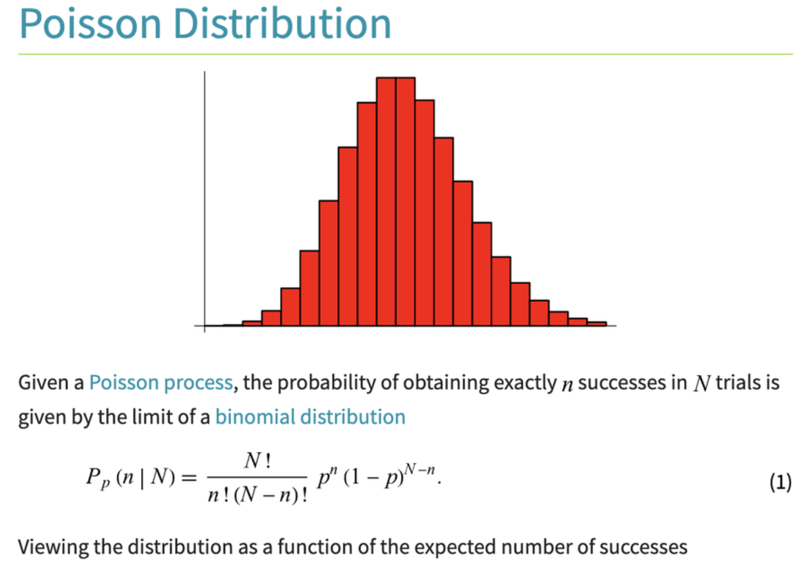
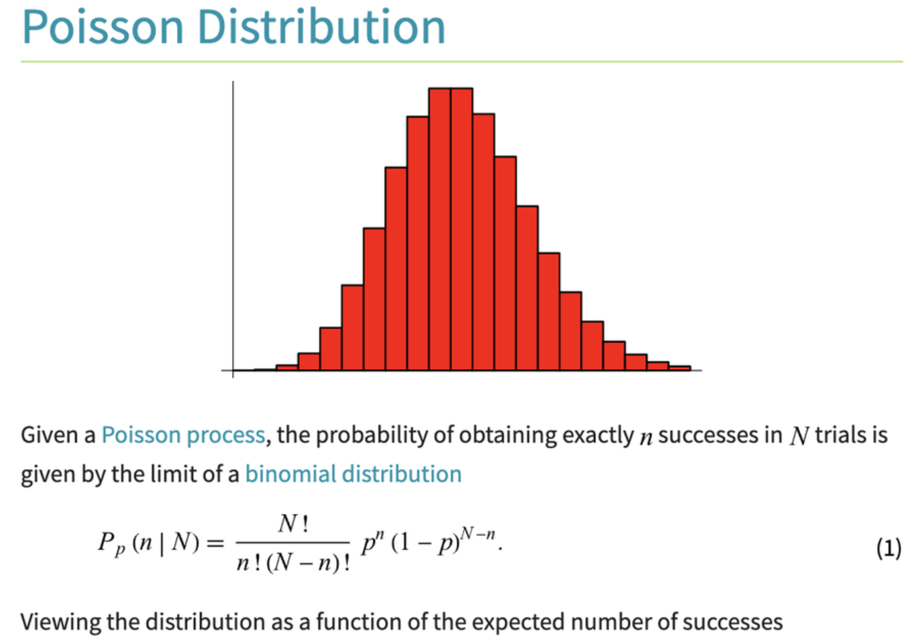
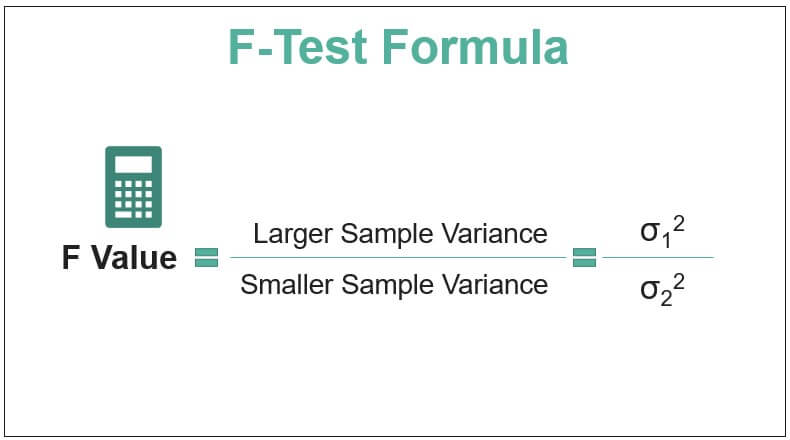
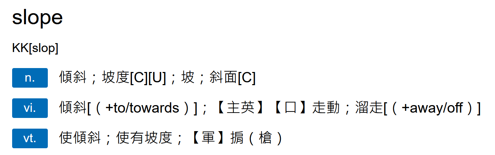

iPAS AI應用規劃師 考試重點
L23101 機率統計在機器學習中的應用
主題分類
1
機率論基礎
2
統計量與抽樣分佈
3
參數估計
4
假設檢定
5
相關性與迴歸分析基礎
6
貝氏定理與應用
7
資訊理論基礎
8
機率統計於模型評估之應用
#1
★★
機率 (Probability) - 基本定義
核心概念
機率 是衡量某一事件發生可能性大小的數值，其值介於 0 和 1 之間（包含 0 和 1）。0 表示事件不可能發生，1 表示事件必然發生。
- 樣本空間 (Sample Space): 隨機試驗所有可能結果的集合。
- 事件 (Event): 樣本空間的一個子集。

#2
★★★
條件機率 (Conditional Probability)
核心概念
條件機率 指的是在事件 B 已經發生的條件下，事件 A 發生的機率，表示為 P(A|B)。
計算公式為：P(A|B) = P(A ∩ B) / P(B)，其中 P(B) > 0。
這是許多機器學習 (ML) 模型的基礎，如貝氏分類器。
計算公式為：P(A|B) = P(A ∩ B) / P(B)，其中 P(B) > 0。
這是許多機器學習 (ML) 模型的基礎，如貝氏分類器。

#3
★★★
獨立事件 (Independent Events)
核心概念
若兩個事件 A 和 B 的發生互不影響，則稱它們為獨立事件。
數學定義：P(A ∩ B) = P(A) * P(B)。
或者，若 P(B) > 0，則 P(A|B) = P(A)；若 P(A) > 0，則 P(B|A) = P(B)。
樸素貝氏 (Naive Bayes) 算法的核心假設就是特徵之間相互獨立。
數學定義：P(A ∩ B) = P(A) * P(B)。
或者，若 P(B) > 0，則 P(A|B) = P(A)；若 P(A) > 0，則 P(B|A) = P(B)。
樸素貝氏 (Naive Bayes) 算法的核心假設就是特徵之間相互獨立。
#4
★★★★
隨機變數 (Random Variable) 與 機率分佈 (Probability Distribution)
核心概念
隨機變數 (RV) 是一個變數，其值是隨機現象的數值結果。
分為：
分為：
- 離散隨機變數 (Discrete RV): 值只能取有限個或可數無限個。其分佈由機率質量函數 (Probability Mass Function, PMF) 描述。
- 連續隨機變數 (Continuous RV): 值可以取某一區間內的任何值。其分佈由機率密度函數 (Probability Density Function, PDF) 描述。

 Probability Mass Function (PMF).png)
 Probability Mass Function (PMF) Cumulative Distribution Function (CDF).jpg)
#5
★★★★
期望值 (Expected Value) 與 變異數 (Variance)
核心概念
- 期望值 (E[X]): 隨機變數所有可能值的加權平均，權重為其對應的機率。代表隨機變數的平均水平或中心趨勢。
- 變異數 (Var(X)): 衡量隨機變數取值偏離其期望值的程度。計算公式為 E[(X - E[X])²]。
- 標準差 (Standard Deviation, SD): 變異數的平方根，與原始數據單位相同，更易於解釋離散程度。


#6
★★★
描述性統計 vs 推論性統計
核心概念
- 描述性統計 (Descriptive Statistics): 使用圖表和摘要統計量（如平均數、中位數、標準差）來描述數據集的基本特徵。是探索性數據分析 (EDA) 的核心。
- 推論性統計 (Inferential Statistics): 使用樣本數據來推斷母體參數或對母體進行假設檢定。機器學習中的模型訓練和評估大量依賴推論統計。
#7
★★★
集中趨勢量數 與 離散趨勢量數
核心概念
- 集中趨勢量數 (Measures of Central Tendency): 描述數據中心位置。
- 平均數 (Mean): 總和除以個數，易受極端值影響。
- 中位數 (Median): 排序後位於中間的值，對極端值不敏感。
- 眾數 (Mode): 出現次數最多的值。
- 離散趨勢量數 (Measures of Dispersion/Variability): 描述數據分散程度。
- 全距 (Range): 最大值減最小值。
- 四分位距 (IQR): Q3 - Q1，不易受極端值影響。
- 變異數 (Variance) / 標準差 (Standard Deviation)。
#8
★★★★★
常見機率分佈 (Common Probability Distributions)
核心概念
理解數據的潛在分佈對模型選擇和假設檢定至關重要：
- 常態分佈 (Normal/Gaussian Distribution): 鐘形曲線，由平均數 (μ) 和標準差 (σ) 定義。許多自然現象和統計量近似服從常態分佈。
- 二項分佈 (Binomial Distribution): n 次獨立伯努利試驗中成功的次數。
- 卜瓦松分佈 (Poisson Distribution): 描述單位時間或空間內事件發生次數的分佈。
- 均勻分佈 (Uniform Distribution): 在一個區間內，所有值的機率密度相等。


 


#9
★★★★
中央極限定理 (Central Limit Theorem, CLT)
核心概念
CLT 指出，無論母體分佈為何，只要樣本量 n 足夠大（通常 n ≥ 30），樣本平均數 (Sample Mean) 的抽樣分佈 (Sampling Distribution) 會趨近於常態分佈。
此分佈的平均數等於母體平均數 (μ)，標準差（稱為標準誤 Standard Error, SE）等於母體標準差 (σ) 除以樣本量的平方根 (σ/√n)。
CLT 是許多推論統計方法（如信賴區間、假設檢定）的理論基礎。
此分佈的平均數等於母體平均數 (μ)，標準差（稱為標準誤 Standard Error, SE）等於母體標準差 (σ) 除以樣本量的平方根 (σ/√n)。
CLT 是許多推論統計方法（如信賴區間、假設檢定）的理論基礎。

#10
★★★★
參數估計: 點估計 vs 區間估計
核心概念
參數估計 (Parameter Estimation) 是使用樣本統計量來估計未知的母體參數。
- 點估計 (Point Estimation): 用單一數值（點估計量）來估計母體參數（如用樣本平均數估計母體平均數）。
- 區間估計 (Interval Estimation): 提供一個數值區間（信賴區間 Confidence Interval, CI），並伴隨一個信賴水準 (Confidence Level)，表示該區間包含真實母體參數的可能性。

#11
★★★
估計量的性質 (Properties of Estimators)
核心概念
評估一個估計量好壞的標準：
- 不偏性 (Unbiasedness): 估計量的期望值等於被估計的母體參數。
- 有效性 (Efficiency): 在所有不偏估計量中，具有最小變異數者。
- 一致性 (Consistency): 隨著樣本量增大，估計量的值趨近於母體參數。
#12
★★★★
最大概似估計 (Maximum Likelihood Estimation, MLE)
核心概念
MLE 是一種常用的參數估計方法。
其核心思想是：找到一組參數值，使得觀察到的樣本數據出現的機率（概似函數 Likelihood Function）最大化。
在機器學習中，許多模型的參數（如線性迴歸的係數、邏輯斯迴歸的係數）都是通過MLE 或其變形（如最小化負對數概似）來求解的。
其核心思想是：找到一組參數值，使得觀察到的樣本數據出現的機率（概似函數 Likelihood Function）最大化。
在機器學習中，許多模型的參數（如線性迴歸的係數、邏輯斯迴歸的係數）都是通過MLE 或其變形（如最小化負對數概似）來求解的。

#13
★★★★★
假設檢定 (Hypothesis Testing) - 基本流程
核心概念
假設檢定 是利用樣本數據來判斷關於母體的某個假設是否成立的統計方法。
基本步驟：
基本步驟：
- 建立虛無假設 (Null Hypothesis, H0) 和對立假設 (Alternative Hypothesis, H1)。H0 通常是想要推翻的假設（如無效果、無差異）。
- 選擇顯著水準 (Significance Level, α)，通常為 0.05 或 0.01。
- 選擇合適的檢定統計量 (Test Statistic) 並計算其值。
- 計算 p 值 (p-value) 或確定拒絕域。
- 做出決策：若 p 值 < α (或檢定統計量落在拒絕域)，則拒絕 H0；否則，不拒絕 H0。


#14
★★★★★
第一型錯誤 (Type I Error) 與 第二型錯誤 (Type II Error)
核心概念
在假設檢定中可能犯的兩種錯誤：
α 和 β 之間存在權衡關係，降低一種錯誤的機率通常會增加另一種錯誤的機率。
- 第一型錯誤 (α): H0 為真時卻拒絕 H0 (偽陽性, False Positive)。其發生的機率上限由顯著水準 α 控制。
- 第二型錯誤 (β): H0 為假時卻未拒絕 H0 (偽陰性, False Negative)。
α 和 β 之間存在權衡關係，降低一種錯誤的機率通常會增加另一種錯誤的機率。
#15
★★★★
p 值 (p-value) 的意義與判讀
核心概念
p 值 是在假設 H0 為真的前提下，觀察到當前樣本結果或更極端結果的機率。
判讀：
判讀：
- p 值 < α (顯著水準): 結果具有統計顯著性，拒絕 H0。表示觀察到的結果在 H0 為真的情況下不太可能發生。
- p 值 ≥ α: 結果不具有統計顯著性，不拒絕 H0。表示沒有足夠證據推翻 H0。
#16
★★★★
常用假設檢定方法 (t-檢定, F-檢定, 卡方檢定)
核心概念
根據數據類型和研究問題選擇不同的檢定方法：
- t-檢定 (t-test): 用於比較一或兩個樣本的平均數。例如：比較兩種模型預測誤差的平均值是否有顯著差異（需注意樣本是否獨立、變異數是否相等）。樣本數較小且母體標準差未知時常用。
- F-檢定 (F-test): 通常用於比較兩個或多個群體的變異數（變異數分析 ANOVA 的基礎），或在迴歸分析中檢定整體模型的顯著性。 
- 卡方檢定 (Chi-squared Test, χ²): 用於檢定類別變數之間的關聯性（獨立性檢定）或觀察頻次與期望頻次是否一致（適合度檢定）。例如：檢定模型預測的類別分佈是否與實際分佈一致。


#17
★★★★
相關係數 (Correlation Coefficient)
核心概念
相關係數 (通常指皮爾森相關係數 Pearson Correlation Coefficient, r) 衡量兩個連續變數之間線性關係的強度和方向。
在特徵工程中，常用於檢測特徵之間的共線性。
- 值域：-1 到 +1。
- +1：完全正相關。
- -1：完全負相關。
- 0：無線性相關。
在特徵工程中，常用於檢測特徵之間的共線性。

#18
★★★
簡單線性迴歸 (Simple Linear Regression)
核心概念
簡單線性迴歸 試圖找到一條直線 (Y = β0 + β1X + ε) 來最佳擬合一個自變數 (X) 和一個應變數 (Y) 之間的關係。
- β0: 截距 (Intercept)，表示當自變數 X = 0 時，應變數 Y 的預測值。
- β1: 斜率 (Slope)，表示 X 每增加一單位，Y 的平均變化量。 
- ε: 誤差項 (Error Term)，代表模型無法解釋的變異。
#19
★★★★
決定係數 (Coefficient of Determination, R²)
核心概念
R² 是迴歸分析中衡量模型擬合優度的指標。
其值介於 0 和 1 之間，表示應變數 (Y) 的總變異中，可以被自變數 (X) 解釋的比例。
R² 越高，表示模型對數據的解釋能力越強。
例如，R² = 0.7 表示應變數 70% 的變異可以由模型解釋。
注意：R² 會隨著自變數數量的增加而增加（即使新增的變數無關），因此在多元迴歸中常使用調整後 R² (Adjusted R²)。 *樣題曾考 R² 定義*
其值介於 0 和 1 之間，表示應變數 (Y) 的總變異中，可以被自變數 (X) 解釋的比例。
R² 越高，表示模型對數據的解釋能力越強。
例如，R² = 0.7 表示應變數 70% 的變異可以由模型解釋。
注意：R² 會隨著自變數數量的增加而增加（即使新增的變數無關），因此在多元迴歸中常使用調整後 R² (Adjusted R²)。 *樣題曾考 R² 定義*
#20
★★★★★
貝氏定理 (Bayes' Theorem)
核心概念
貝氏定理 描述了在獲得新證據後，更新事件發生機率的方法。
公式： P(A|B) = [P(B|A) * P(A)] / P(B)
公式： P(A|B) = [P(B|A) * P(A)] / P(B)
- P(A|B): 後驗機率 (Posterior Probability) - 在已知 B 發生的情況下，A 發生的機率。
- P(B|A): 概似度 (Likelihood) - 在已知 A 發生的情況下，B 發生的機率。
- P(A): 先驗機率 (Prior Probability) - 在觀察到 B 之前，A 發生的機率。
- P(B): 證據 (Evidence) - B 發生的邊際機率。
#21
★★★★
貝氏定理 在機器學習中的應用: 樸素貝氏分類器
核心概念
樸素貝氏分類器 (Naive Bayes Classifier) 是一種基於貝氏定理的簡單有效的分類算法。
核心思想：對於給定的待分類項 X（具有特徵 x1, x2, ..., xn），計算它屬於每個類別 Ck 的後驗機率 P(Ck|X)，並將其歸類到後驗機率最大的那個類別。
計算 P(Ck|X) 使用貝氏定理：P(Ck|X) ∝ P(X|Ck) * P(Ck)。
"樸素"之處在於它假設所有特徵之間相互獨立（Conditional Independence Assumption）：P(X|Ck) = P(x1|Ck) * P(x2|Ck) * ... * P(xn|Ck)。
儘管這個假設在現實中通常不成立，但樸素貝氏在許多應用（如文本分類、垃圾郵件過濾）中表現良好，且計算效率高。
核心思想：對於給定的待分類項 X（具有特徵 x1, x2, ..., xn），計算它屬於每個類別 Ck 的後驗機率 P(Ck|X)，並將其歸類到後驗機率最大的那個類別。
計算 P(Ck|X) 使用貝氏定理：P(Ck|X) ∝ P(X|Ck) * P(Ck)。
"樸素"之處在於它假設所有特徵之間相互獨立（Conditional Independence Assumption）：P(X|Ck) = P(x1|Ck) * P(x2|Ck) * ... * P(xn|Ck)。
儘管這個假設在現實中通常不成立，但樸素貝氏在許多應用（如文本分類、垃圾郵件過濾）中表現良好，且計算效率高。

#22
★★★
最大後驗機率估計 (Maximum A Posteriori, MAP)
核心概念
MAP 估計是貝氏統計中的一種點估計方法。
它尋找使後驗機率 P(θ|Data) 最大化的參數 θ 值。
與最大概似估計 (MLE) 的區別在於，MAP 考慮了參數的先驗分佈 P(θ)：
P(θ|Data) ∝ P(Data|θ) * P(θ)
MAP 可以看作是帶有正規化項的 MLE，有助於防止過擬合，特別是在數據量較少時。
它尋找使後驗機率 P(θ|Data) 最大化的參數 θ 值。
與最大概似估計 (MLE) 的區別在於，MAP 考慮了參數的先驗分佈 P(θ)：
P(θ|Data) ∝ P(Data|θ) * P(θ)
MAP 可以看作是帶有正規化項的 MLE，有助於防止過擬合，特別是在數據量較少時。
#23
★★★
熵 (Entropy)
核心概念
在資訊理論中，熵 用來衡量一個隨機變數的不確定性或資訊量。
對於離散隨機變數 X，其熵 H(X) 定義為：H(X) = - Σ P(xi) * logb(P(xi))，其中 P(xi) 是 X 取值 xi 的機率，b 通常取 2（單位為位元 bits）或 e（單位為納特 nats）。
熵越大，表示隨機變數的不確定性越高，包含的平均資訊量越多。
在決策樹 (Decision Tree) 算法中，資訊增益 (Information Gain) 就是基於熵來計算的，用於選擇最佳劃分特徵。
對於離散隨機變數 X，其熵 H(X) 定義為：H(X) = - Σ P(xi) * logb(P(xi))，其中 P(xi) 是 X 取值 xi 的機率，b 通常取 2（單位為位元 bits）或 e（單位為納特 nats）。
熵越大，表示隨機變數的不確定性越高，包含的平均資訊量越多。
在決策樹 (Decision Tree) 算法中，資訊增益 (Information Gain) 就是基於熵來計算的，用於選擇最佳劃分特徵。
#24
★★★★
交叉熵 (Cross-Entropy)
核心概念
交叉熵 用於衡量兩個機率分佈之間的差異。
在機器學習中，特別是分類問題，交叉熵 常被用作損失函數 (Loss Function)。
它衡量的是模型預測的機率分佈 Q 與真實的機率分佈 P 之間的差異。
公式為：H(P, Q) = - Σ P(xi) * logb(Q(xi))。
目標是最小化交叉熵損失，使模型預測的分佈盡可能接近真實分佈。常用的有二元交叉熵 (Binary Cross-Entropy) 和分類交叉熵 (Categorical Cross-Entropy)。
在機器學習中，特別是分類問題，交叉熵 常被用作損失函數 (Loss Function)。
它衡量的是模型預測的機率分佈 Q 與真實的機率分佈 P 之間的差異。
公式為：H(P, Q) = - Σ P(xi) * logb(Q(xi))。
目標是最小化交叉熵損失，使模型預測的分佈盡可能接近真實分佈。常用的有二元交叉熵 (Binary Cross-Entropy) 和分類交叉熵 (Categorical Cross-Entropy)。
#25
★★★
KL 散度 (Kullback-Leibler Divergence)
核心概念
KL 散度（也稱相對熵 Relative Entropy）是衡量兩個機率分佈 P 和 Q 之間差異的另一種方法。
公式為：DKL(P || Q) = Σ P(xi) * log(P(xi) / Q(xi))。
它衡量的是用分佈 Q 來近似分佈 P 時，所損失的資訊量。
KL 散度非負，且當 P = Q 時為 0。
KL 散度不具有對稱性，即 DKL(P || Q) ≠ DKL(Q || P)。
與交叉熵的關係：H(P, Q) = H(P) + DKL(P || Q)。最小化交叉熵等價於最小化 KL 散度（因為 H(P) 是固定的）。常用於變分自編碼器 (VAE)。
公式為：DKL(P || Q) = Σ P(xi) * log(P(xi) / Q(xi))。
它衡量的是用分佈 Q 來近似分佈 P 時，所損失的資訊量。
KL 散度非負，且當 P = Q 時為 0。
KL 散度不具有對稱性，即 DKL(P || Q) ≠ DKL(Q || P)。
與交叉熵的關係：H(P, Q) = H(P) + DKL(P || Q)。最小化交叉熵等價於最小化 KL 散度（因為 H(P) 是固定的）。常用於變分自編碼器 (VAE)。

#26
★★★★★
混淆矩陣 (Confusion Matrix)
核心概念
混淆矩陣 是評估分類模型性能的可視化工具。
對於二元分類，它包含四個值：
對於二元分類，它包含四個值：
- 真陽性 (True Positive, TP): 實際為正，預測也為正。
- 真陰性 (True Negative, TN): 實際為負，預測也為負。
- 偽陽性 (False Positive, FP): 實際為負，預測為正 (第一型錯誤)。
- 偽陰性 (False Negative, FN): 實際為正，預測為負 (第二型錯誤)。
#27
★★★★★
分類模型評估指標 (Accuracy, Precision, Recall, F1-Score)
核心概念
基於混淆矩陣計算的常用分類評估指標：
- 準確率 (Accuracy): (TP+TN) / (TP+TN+FP+FN)。整體預測正確的比例。在類別不平衡時可能具誤導性。
- 精確率 (Precision): TP / (TP+FP)。在所有預測為正的樣本中，實際為正的比例。關注預測的準確性（寧缺勿濫）。
- 召回率 (Recall / Sensitivity / True Positive Rate, TPR): TP / (TP+FN)。在所有實際為正的樣本中，被正確預測為正的比例。關注是否能找出所有正樣本（寧可錯殺一百，不可放過一個）。
- F1 分數 (F1-Score): 2 * (Precision * Recall) / (Precision + Recall)。精確率和召回率的調和平均數，用於綜合考量兩者。
- 特異度 (Specificity / True Negative Rate, TNR): TN / (TN+FP)。在所有實際為負的樣本中，被正確預測為負的比例。

#28
★★★★★
ROC 曲線 與 AUC
核心概念
- ROC 曲線 (Receiver Operating Characteristic Curve): 以偽陽性率 (False Positive Rate, FPR = 1 - Specificity) 為橫軸，真陽性率 (True Positive Rate, TPR = Recall) 為縱軸，繪製不同分類閾值下的點所形成的曲線。
- AUC (Area Under the Curve): ROC 曲線下方的面積。值介於 0 和 1 之間。AUC 越接近 1，表示模型區分正負樣本的能力越強。AUC = 0.5 表示模型沒有區分能力（隨機猜測）。
#29
★★★★
交叉驗證 (Cross-Validation, CV)
核心概念
交叉驗證 是一種評估模型泛化能力的統計方法，旨在減少模型評估結果的隨機性，更可靠地估計模型在未見數據上的表現。
最常用的是 k 折交叉驗證 (k-fold Cross-Validation):
最常用的是 k 折交叉驗證 (k-fold Cross-Validation):
- 將原始數據集隨機劃分為 k 個大小相似的子集（折）。
- 進行 k 次迴圈：每次選擇其中一個子集作為驗證集，其餘 k-1 個子集作為訓練集。
- 在訓練集上訓練模型，在驗證集上評估性能。
- 將 k 次評估結果平均，得到最終的模型性能估計。

#30
★★★★
偏差-變異數權衡 (Bias-Variance Tradeoff)
核心概念
偏差 (Bias): 模型預測值與真實值之間的系統性差異。高偏差通常源於模型過於簡單，未能捕捉數據的複雜性（欠擬合 Underfitting）。
變異數 (Variance): 模型預測對於不同訓練數據集的敏感度。高變異數通常源於模型過於複雜，過度擬合了訓練數據中的噪聲（過擬合 Overfitting）。
模型的總誤差可以分解為 偏差² + 變異數 + 不可避免誤差。
目標是找到一個模型，使其在偏差和變異數之間達到良好的平衡，從而最小化總誤差，獲得最佳的泛化能力。
變異數 (Variance): 模型預測對於不同訓練數據集的敏感度。高變異數通常源於模型過於複雜，過度擬合了訓練數據中的噪聲（過擬合 Overfitting）。
模型的總誤差可以分解為 偏差² + 變異數 + 不可避免誤差。
目標是找到一個模型，使其在偏差和變異數之間達到良好的平衡，從而最小化總誤差，獲得最佳的泛化能力。

#31
★★★
數據洩漏 (Data Leakage)
核心概念
數據洩漏是指在模型訓練過程中，不應出現的來自測試集或未來的訊息被意外地引入到訓練數據或特徵工程中，導致模型在評估時表現虛高，但在實際部署時效果不佳。
例子：在進行特徵縮放時，使用了包含測試集數據計算出的均值或標準差；將預測目標本身或其衍生訊息作為了輸入特徵。
必須在數據準備和模型訓練流程中嚴格區分訓練數據和測試數據，避免數據洩漏。
例子：在進行特徵縮放時，使用了包含測試集數據計算出的均值或標準差；將預測目標本身或其衍生訊息作為了輸入特徵。
必須在數據準備和模型訓練流程中嚴格區分訓練數據和測試數據，避免數據洩漏。
#32
★★★
線性迴歸 (Linear Regression) 的假設
核心概念
雖然線性迴歸簡單，但其有效性依賴於一些基本假設：
- 線性關係 (Linearity)：自變數與應變數之間存在線性關係。
- 獨立性 (Independence)：觀測值之間相互獨立。
- 同質變異性 (Homoscedasticity)：誤差項的變異數對於所有自變數的值都是恆定的。
- 常態性 (Normality)：誤差項服從常態分佈。
- 無多重共線性 (No Multicollinearity)：自變數之間不存在高度線性相關。

#33
★★★
模型選擇標準 (AIC, BIC)
核心概念
除了交叉驗證，還可以使用訊息準則來輔助模型選擇，這些準則在擬合優度與模型複雜度之間進行權衡：
- 赤池訊息量準則 (AIC, Akaike Information Criterion)：AIC = -2 * log-likelihood + 2 * k，其中 k 是模型參數數量。
- 貝氏訊息量準則 (BIC, Bayesian Information Criterion)：BIC = -2 * log-likelihood + k * log(n)，其中 n 是樣本量。
沒有找到符合條件的重點。
↑